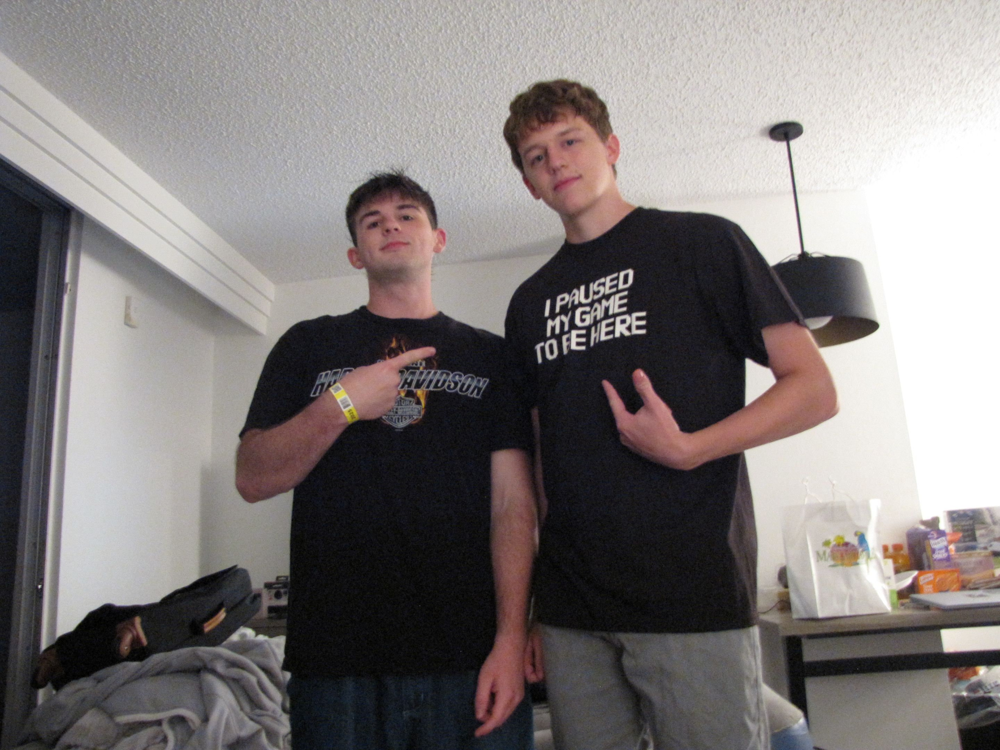

Home
Welcome to my personal home page. My name is Kyle Beland, and I am studying Information Technology at UNC Charlotte.
I enjoy playing hockey and spending time with my girlfriend. I am interested in pursuing a technology career in biopharma after college.
